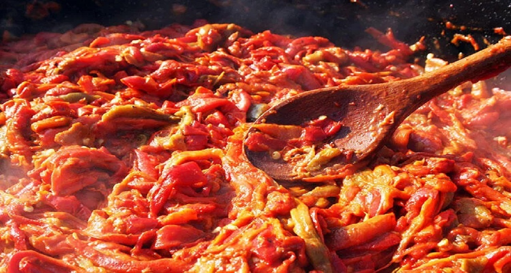
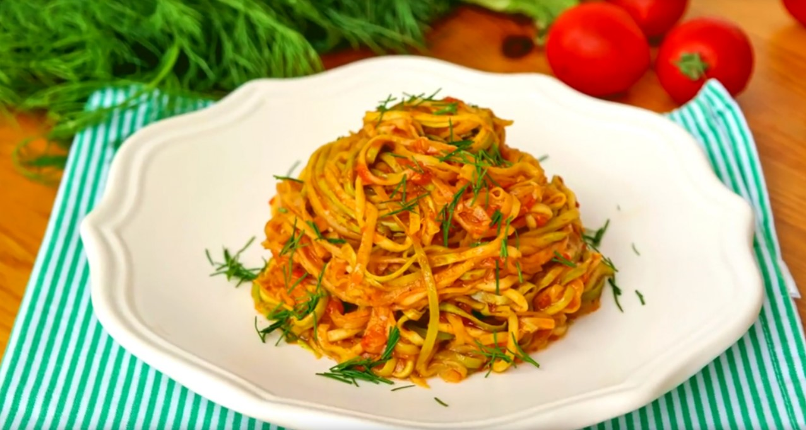
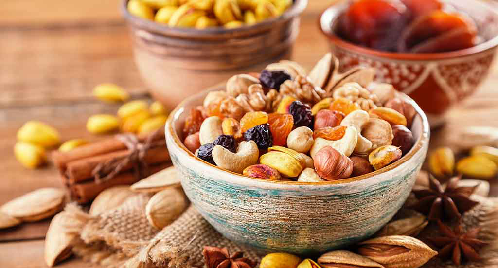

Son Makalelerimiz
Sizler için özenle yazdığımız makalelerimizi okuyarak sizde diyet ve sağlıklı beslenme hakkında bilgi sahibi olabilirsiniz.

Kırmızı Biberli Yoğurt
Bu muhteşem tabağın faydaları, güzelliğinin bile önüne geçebilecek potansiyelde içerdiği A vitamini, C vitamini, beta-karoten ve antioksidanlarla kalp hastalıklarına yakalanma riskini azaltır.
Devamını Oku
Kabak Spaghetti
Bu muhteşem tabağın faydaları, güzelliğinin bile önüne geçebilecek potansiyelde içerdiği A vitamini, C vitamini, beta-karoten ve antioksidanlarla kalp hastalıklarına yakalanma riskini azaltır.
Devamını Oku
Hangi Besinleri Tercih Etmeliyiz?
Bu muhteşem tabağın faydaları, güzelliğinin bile önüne geçebilecek potansiyelde içerdiği A vitamini, C vitamini, beta-karoten ve antioksidanlarla kalp hastalıklarına yakalanma riskini azaltır.
Devamını Oku